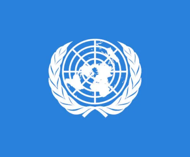
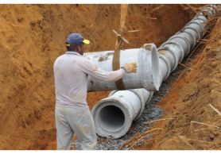
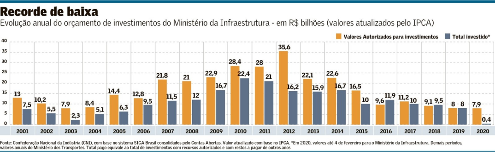
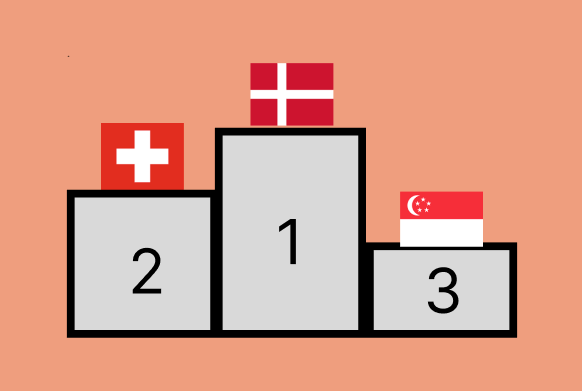
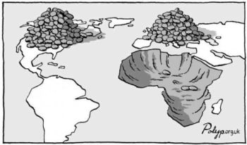

O que são as ODS?
Os Objetivos de Desenvolvimento Sustentável (ODS) são parte de um projeto mais amplo, a Agenda 2030, adotada em 2015, durante a Cúpula das Nações Unidas sobre o Desenvolvimento Sustentável.
São 17 objetivos – 16 temáticos e 1 sobre meios de implementação – desdobrados em 169 metas e 231 indicadores.
O ODS 9 fala sobre “desenvolvimento de infraestrutura de qualidade, confiável, sustentável e resiliente, incluindo infraestrutura regional e transfronteiriça, para apoiar o desenvolvimento econômico e o bem-estar humano, com foco no acesso equitativo e preços acessíveis para todos”.
Se levarmos em conta que mais da metade da população global vive em cidades, questões como transportes de massa e energias renováveis são cada vez mais importantes.
|
 |
| Indústria:
A industrialização é um setor de enorme importância para o desenvolvimento de uma sociedade pois gera: crescimento econômico; impulsiona o desenvolvimento de novas tecnologias; cria oportunidades de trabalho e consequentemente reduz a pobreza.
|
|
| Inovação:
Inovação não é necessariamente sobre fazer algo do “zero” (o que seria uma “invenção”), mas sim melhorar produtos, sistemas, estruturas e afins com o objetivo de alcançar melhores resultados e capturar mais valor.
|
|
| Infraestrutura:
Para que uma sociedade possa realizar suas atividades produtivas é preciso que haja condições fundamentais para isso esse conjunto de estruturas essenciais é chamado de infraestrutura e seus principais elementos são: sistemas de geração e distribuição de energia; de água e saneamento; de transporte terrestre, marítimo e aéreo; e de telecomunicações.
Uma infraestrutura resiliente é aquela preparada para lidar com os efeitos de situações adversas e desastres como enchentes e terremotos. Os serviços de infraestrutura têm que estar amplamente acessíveis a população o que exige grandes investimentos.
|
 |
Objetivos
Objetivos: É importante ressaltar que esses objetivos envolvem medidas para melhoria na saúde, educação, economia, redução das desigualdades, violências, impactos ambientais, entre outros. Tudo em busca de um mundo melhor.
Nações Unidas
Desenvolver infraestrutura de qualidade, confiável, sustentável e resiliente, incluindo infraestrutura regional e transfronteiriça, para apoiar o desenvolvimento econômico e
o bem-estar humano, com foco no acesso equitativo e a preços acessíveis para todos.
Brasil
Aprimorar o sistema viário do País, com foco em sustentabilidade e segurança no trânsito e transporte, equalizando as desigualdades regionais, promovendo a integração regional
e transfronteiriça, na busca de menor custo, para o transporte de passageiros e de cargas, evitando perdas, com maior participação dos modos de alta capacidade como ferroviário,
aquaviário e dutoviário, tornando-o acessível e proporcionando bem-estar a todos.
Promover a industrialização inclusiva e sustentável e, até 2030, aumentar significativamente a participação da indústria no emprego e no produto interno bruto, de acordo com as circunstâncias
nacionais, e dobrar sua participação nos países de menor desenvolvimento relativo.
Brasil
Até 2030, promover a atividade econômica inclusiva e sustentável e a atividade de alta complexidade tecnológica, com foco na elevação da produtividade, do emprego e do PIB
, e com melhora nas condições de trabalho e na apropriação dos ganhos de produtividade advindos.
Nações Unidas
Aumentar o acesso das pequenas indústrias e outras empresas, particularmente em países em desenvolvimento, aos serviços financeiros, incluindo crédito acessível e propiciar
sua integração em cadeias de valor e mercados.
Brasil
Aumentar e desburocratizar o acesso das micro e pequenas empresas a todos os serviços financeiros, garantindo crédito em condições adequadas à realidade dessas empresas, inclusive por meio de soluções tecnológicas inovadoras, para propiciar sua integração em cadeias de valor e mercados.
Nações unidas
Até 2030, modernizar a infraestrutura e reabilitar as indústrias para torná-las sustentáveis, com eficiência aumentada no uso de recursos e maior adoção de tecnologias e processos industriais limpos e ambientalmente adequados; com todos os países atuando de acordo com suas respectivas capacidades.
Brasil
Até 2030, modernizar a infraestrutura e reabilitar as atividades econômicas para torná-las sustentáveis, com foco no uso de recursos renováveis e maior adoção de tecnologias e processos industriais limpos e ambientalmente adequados.
Nações unidas
Fortalecer a pesquisa científica, melhorar as capacidades tecnológicas de setores industriais em todos os países, particularmente nos países em desenvolvimento, inclusive, até 2030, incentivando a inovação e aumentando substancialmente o número de trabalhadores de pesquisa e desenvolvimento por milhão de pessoas e os gastos público e privado em pesquisa e desenvolvimento.
Brasil
Fortalecer a pesquisa científica e melhorar as capacidades tecnológicas das empresas, incentivando, até 2030, a inovação, visando aumentar o emprego do conhecimento científico e tecnológico nos desafios socioeconômicos nacionais e nas tecnologias socio ambientalmente inclusivas; e aumentar a produtividade agregada da economia.
a) Aumentar para 3.000 o número de trabalhadores de pesquisa e desenvolvimento por milhão de habitantes;
b) Aumentar para 120.000 o número de técnicos e pesquisadores ocupados em P&D nas empresas; e
c) Aumentar para 2,00% os gastos público e privado em pesquisa e desenvolvimento em relação ao PIB.
Nações unidas
Facilitar o desenvolvimento de infraestrutura sustentável e resiliente em países em desenvolvimento, por meio de maior apoio financeiro, tecnológico e técnico aos países africanos, aos países de menor desenvolvimento relativo, aos países em desenvolvimento sem litoral e aos pequenos Estados insulares em desenvolvimento.
Brasil
Meta mantida sem alteração.
Nações unidas
Apoiar o desenvolvimento tecnológico, a pesquisa e a inovação nacionais nos países em desenvolvimento, inclusive garantindo um ambiente político propício para, entre outras coisas, diversificação industrial e agregação de valor às commodities.
Brasil
Apoiar o desenvolvimento tecnológico, a pesquisa e a inovação nacionais, por meio de políticas públicas que assegurem um ambiente institucional e normativo favorável para, entre outras coisas, promover a diversificação industrial e a agregação de valor às commodities.
Nações unidas
Aumentar significativamente o acesso às tecnologias de informação e comunicação e empenhar-se para procurar ao máximo oferecer acesso universal e a preços acessíveis à internet nos países menos desenvolvidos, até 2020.
Brasil
Aumentar significativamente o acesso às tecnologias de informação e comunicação e empenhar-se para oferecer acesso universal e a preços acessíveis à internet, até 2020, buscando garantir a qualidade, a privacidade, a proteção de dados e a segurança cibernética.
No Brasil
| Em uma lista que analisa fatores como performance econômica, eficiência do governo, eficiência empresarial e infraestrutura de 63 países, o Brasil alcança o 59º lugar. Em 2022, o país perdeu duas posições em relação a 2021, segundo análise do International Institute for Management Development (IMD), com sede na Suíça.
De acordo com a pesquisadora Laura Cury, co-facilitadora do Grupo de Grupo de Trabalho (GT) da Sociedade Civil para a Agenda 2030 e assessora de relações internacionais da ACT Promoção em Saúde, o diagnóstico feito pela sexta edição do Relatório Luz é grave.
Segundo o levantamento, que traça um panorama da implementação das metas, apenas 0,59% dos 168 pontos analisados apresentam progresso satisfatório. Outros 14,28% têm avanço insuficiente. Mais de 80% dos compromissos acordados estão em retrocesso, sob ameaça ou estagnados. As metas que demonstravam retrocesso passaram de 92 para 103. O progresso insuficiente, que havia sido observado em 13 objetivos, agora atinge 23 deles.
|
|

No Mundo
O primeiro lugar na lista deste ano foi conquistado pela Dinamarca, seguida por Suíça, Singapura, Suécia e Hong Kong. Olhando assim, dá para perceber que há algo em comum entre essas nações, não é mesmo? Considerados países desenvolvidos, todos eles possuem também um alto índice de Desenvolvimento Humano (IDH). São locais muito ricos, com dinheiro e capacidade para investir em pesquisas e criação de novas indústrias e tecnologias.

Outro lado da moeda
| No outro polo, entre os menos competitivos, abaixo do Brasil, estão África do Sul (60ª posição), Mongólia (61ª), Argentina (62ª) e Venezuela (63ª). Assim, essa defasagem que já é grande, tende a aumentar ainda mais, porque os países mais pobres acabam se tornando dependentes dos avanços econômicos e tecnológicos das regiões mais ricas e desenvolvidas.
|
|
| Países subdesenvolvidos sofrem uma forte influência de empresas multinacionais, que acabam sendo seus os principais centros produtivos. Porém, as empresas estrangeiras, no geral, têm pouco interesse em promover o desenvolvimento tecnológico do local onde estão instaladas suas filiais: elas buscam atender seus próprios interesses.
|
 |